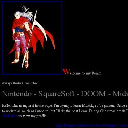
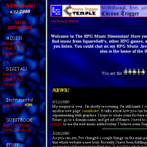

My Website's history
- July 1996 - December 1996 the early days

It all started in the latter part of July 1996. At the time I was soon to be a sophmore in high school. The internet was still somewhat new to me. Our family had only had our computer for just under a year. It was that July I started to get interested in creating my own website. I searched around for free web-hosters, and I came across Geocities. It was a free service that gave you 1MB of space, which was a lot at the time. My first geocities address was: SiliconValley/Park/1973. I didn't know any HTML, so I used Geocities basic editor. Basicly all that was were places to fill in the blanks and select pre-set graphics.
Until December, my website was pretty small. I had a couple pages that don't exist anymore. I had a Green Bay Packers page and a Doom page. I created a level with editors back then. If you have the first Doom (it might work in Doom II, I'm not sure), you can still download it. I have not changed the text that comes with it since I uploaded it in '96. Even back then, I had a page that had midis from squaresoft games, but they were all zip files. I had all of my website stored on a 3 1/2 floppy. To the right is a picture of what my website looked like in the beginning of December. Through the fall I gradually learned HTML by looking and learning from other websites' source code. It was then I realized I wanted to create a new look for my website.
- December 1996 - October 1997
In December, I came to the conclusion I was in the wrong neighborhood. So I moved to TimesSquare/Arcade/4984. In the beginning of 1997, I decided I didn't want the pre-set look the basic editor Geocities gives you. I began to redo my website from total scratch. Slowly I added pages and midis from a wider and wider range of RPGs. In April, I joined GeoPlus. Through a few months, I became a part of several webrings by WebRing. Early that summer, a friend created a webring inspired by my idea, the "RPG Music WebRing." In July, he passed it over to me, thanks Beau!
September was a big month. I saw that Videogame Music Archive became host to a host called Talons. I asked the owner of Mike Newman, the owner of vgmusic.com about Talons, he said they were taking applicants. So in 9/17/97 under the address of www.talons.com/rpgmusic/ I left Geocities. For awhile it was good, but then Talons would have some server trouble from time to time. After Talons had a complete temporary shutdown, I decided enough was enough, and came back to Geocities on 10/28/97 with the same address as before. I think Talons today is run by somebody else.
At the time I also did a few things to spruce up the website: I re-arranged frames, I put in some new backgrounds---I tried to give it a more "sci-fi" look, I created new graphics for the RPG Music WebRing, which I put a lot of effort in. It was also when I gave my squaresoft midis a new look including ratings by myself to incoming midi files. To the left are two pictures. They are the early looks of having both a frames and no frames pages.
- October 1997 - Present

It was December of '97 I changed my Internet nickname from "The Great Magus" to "Bahamut X"; which what it is still today. I got a new e-mail, and changed my geocities name to "rpgmusic" so my web address would be www.geocities.com/~rpgmusic; which was a lot shorter than the old neighborhood address. In the spring of '98 I gave the "what's new?" page a new look and it was also when I decided to ditch the noframes page. I was tired of updating both, and I believed that most people viewing the site could see frames. It was then in early August I moved to the place I am at now, rpgmusic.simplenet.com. I like how Simplenet doesn't limit how much space you take up (as long as it's within reason). Geocities was a good home for two years, it was about time that I moved on.
For the rest of 1998, not too much happened. Just the usual uploading of music and updating and creating a little page here and there. This was also when I started to become busy with other interests, so I couldn't update as much. For awhile in early 1999, I helped update Linn-Mar High School Bands' website. In that same month I created a new section of music, digital music. Digital music takes up more space, but the quality can be better. Before, my website wouldn't take up more than 5MB, from then on it started to go up at a faster rate. In May of 1999 I graduated from high school. I was able to update a couple times during the summer, I wished I had done more.
I started college at Iowa State in August. It was certainly a busy semester, with a good size class load and marching band, I couldn't even think of my website. I did put in a blurp in October to say I was still alive and managed to update during winter break. Spring was even tougher. I had some tough courses, and I think spring semesters are tougher than fall ones because it goes from a dark winter to a nice spring, neither times a fun time to work on school ~_^. Spring semester ended in May, and late that month, I started to update again. We are now to the present, Late June 2000, I created a new look for The RPG Music Dimension. I ditched frames and went to a tables look with some newly created graphics by me. This summer of 2000, I feel real ambitious. I will try my best to keep my ambition up to make this website great. To the right is what The RPG Music Dimension looked like before I gave it a new look.
Now, if you would like a different look into how my website changed and grew, go to oldnew. It goes all the way back to the beginning of 1997.
Last Updated: 6/23/2000
|


{kind=link}
{kind=link}
{kind=link}
{kind=link}